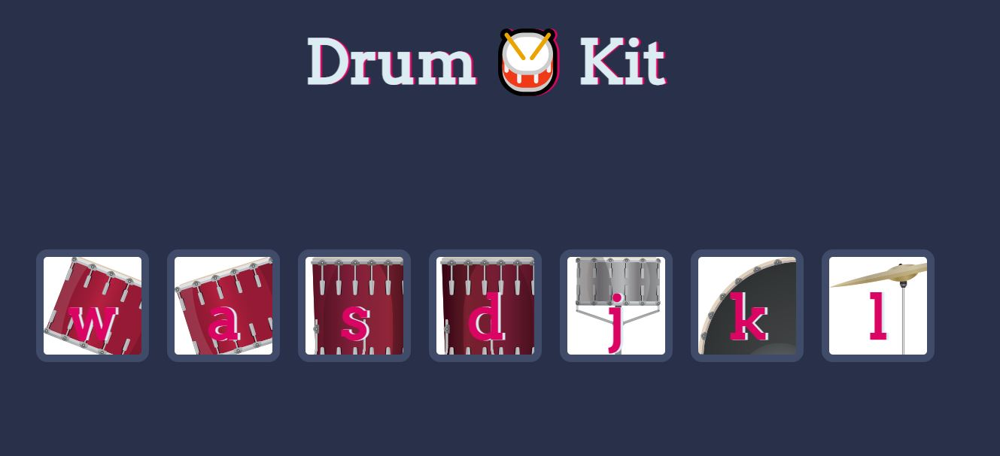
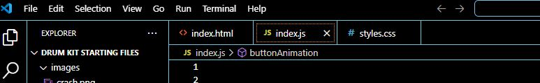
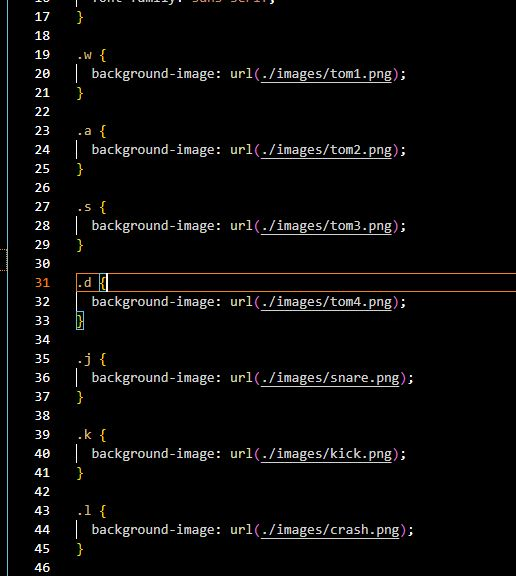
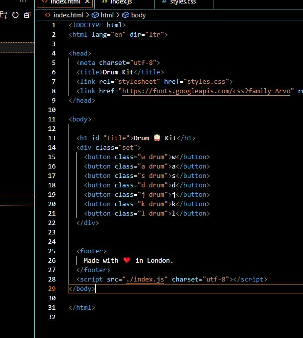
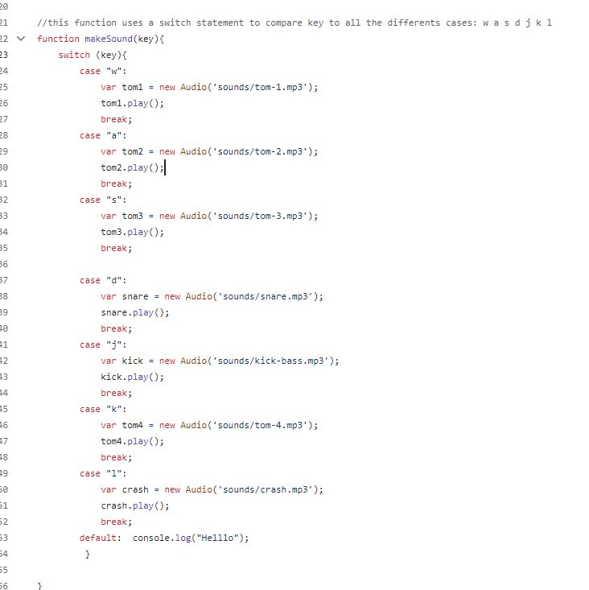

Drum Kit Project using Javascript
Based On The Complete 2024 Web Development Bootcamp
 This project will show how I completed the Drum Kit project, that is based on the online full-stack developer bootcamp: "The Complete 2024 Web Development Bootcamnp" on Udemy.
I will post the code below with comments and try explain what I did and focus on some concepts. I know this was a fully guided project and not one that I created, which is why I will go into detail explaining what the code means.
- Here is the link to the Gihut page: Click Here
-
Some of the code we will focusing on: "For Loops", "Add Event Listeners" and "Switch Statements".
- Follow the step by step guide to complete your own.
Step 1: Creating your project
Open your favorite IDE (I'm using VS Code Version 1.89.1) and create a folder for your HTML project. Create files with extensions: ".html", ".css" and ".js"
Write the HTML you want your page to look like using a simple background image using CSS and html. Create 7 image tag and attach drum images ("Kick, snare, tom 1,2,3,4"). Below you can see in my CSS file I have created a css element for each image and assigned a class selector for each.

In your HTML file (see below), I created a button tag for each image.
Each image also has 2 classes: "a key" and "drum". (See the CSS file for what these classes look like)

Step 2: Applying Javascript
Using Javascript, whenever you click on the images or hit the corresponding key on your keyboard, it will make the respective sound and flash a darker color.
Step 2a.
I will create a "for" loop that will cycle through all the buttons (by selecting their classes), and adding an event listener to each and output a sound.Wait!! what's an Event Listener
It's exactly what it sounds like! Here's the basic format:
addEventListener("click", displayDate);
By adding the above line of code AFTER whatever element or class or id or document tag you want,
you can trigger something to happen in your webpage: i.e. making a sound when someone click an image or button.
It can take 2 parameters, the first one being the event, and the second input is a function that does whatever you
want it to do.
Step 2b. Adding functions in your for loop
One function called is makeSound and the other is ButtonAnimation. They both take a parameter called "ButtonInnerHTML" which is the corresponding key.

Step 2c. Building your functions
Below is a screenshot of both functions: It uses a switch function that compares one value to different cases. Based on the case, it will output an Audio object and play the sound file saved in your project folder. 
Wait!! What's a Switch Statement?!
A switch statement if used instead of multiple IF statements,
It takes one "expression", and compares it to "cases". You can have as many "cases" as you need
Based on which case it matches against, you can make it do "statements".
switch("expression"){
case "1": ( "statements" );
break;
case "2": ( "statements" );
break;
default:
}
Below is the second function that will output a sound based on a key press on
your keyboard. It basically adds a call using ".ClassListAdd" and applies a CSS Class
and then calls a delay function and then removed the class with ".ClassListRemove".
This flashes the button on and off when the keys are pressed.